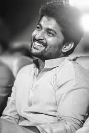

PAWAN KALYAN
Konidela Pawan Kalyan born in2 September 1971 is an Indian politician, actor, serving as the 11th Deputy Chief Minister of Andhra Pradesh since June 2024. He is also the Minister of Panchayat Raj, Rural Development and Rural Water Supply; Environment, Forest, Science and Technology in the Government of Andhra Pradesh as MLA representing the Pithapuram constituency.He is the founder and president of the Janasena Party.
PRABHAS
Uppalapati Venkata Suryanarayana Prabhas Raju ([pɾabhas]; born 23 October 1979), known mononymously as Prabhas, is an Indian actor who predominantly works in Telugu cinema.He is one of the highest-paid actors in Indian cinema and has been featured in Forbes India's Celebrity 100 list since 2015.Referred to in the media as Rebel Star, he has appeared in over 20 films, and has received seven Filmfare Awards nominations, a Nandi Award, and a SIIMA Award.

NANI
Ghanta Naveen Babu (born 24 February 1984), known professionally as Nani, is an Indian actor and producer who predominantly works in Telugu films. One of the highest-paid and most popular Indian actors, Nani is a recipient of several accolades including two Nandi Awards, three Filmfare Awards South and four SIIMA Awards.